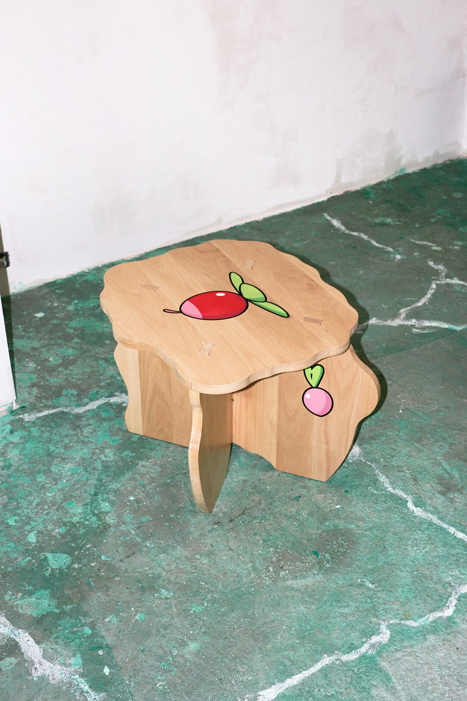
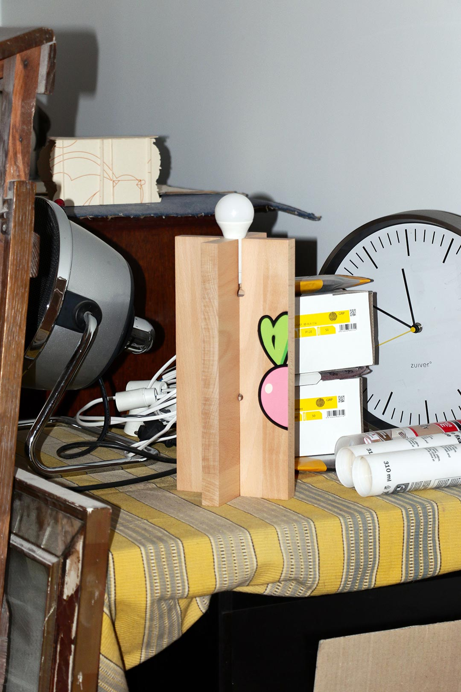
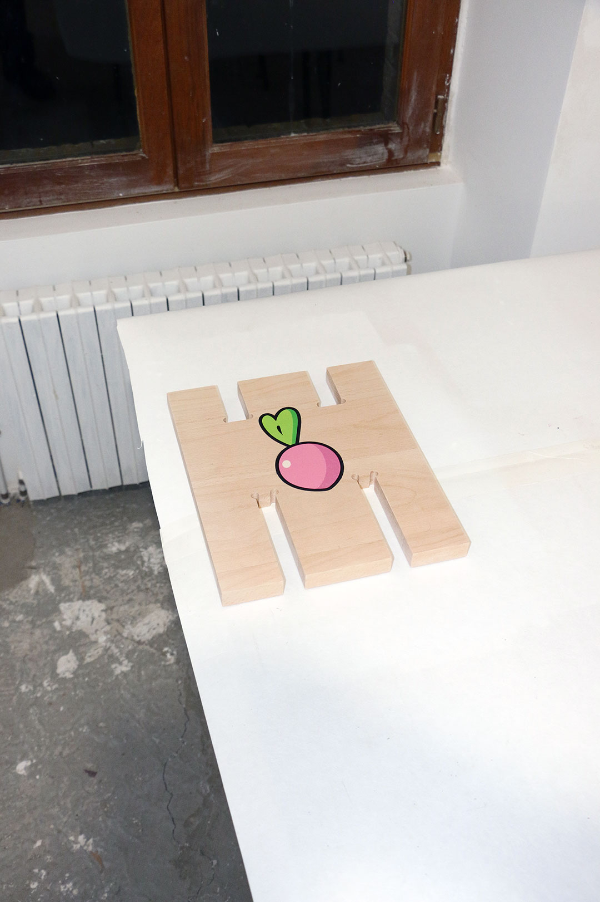

index | shop | info | contact | chaos
Cherry Lamps and Cherry Stools, Cherry Garden, are part of a series of solid beech and spruce painted objects that build on the concept of the Thirst Chair, Flower Garden n°2. Each object is shaped by a design approach inspired by printing and cutting errors found in the trading card game market.
Referencing traditional Provençal furniture, the pieces combine minimal floral motifs with intersecting surfaces that shift in resolution; echoing effects from 3D software and video games.
Cherry Stool, Cherry Garden (2023) | Beech wood, acrylic paint | 42. 53. 52cm (1 available via shop)

Cherry Lamps, Cherry Garden (2023) | Beech wood, acrylic paint | 35. 22. 20cm (2 available via shop)


Cherry Stool, Cherry Garden (2023) | Spurce wood, acrylic paint | 45. 25. 25cm (made to order via shop)
*This website was last updated on July 1, 2026.